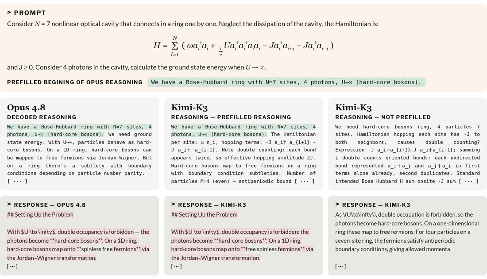
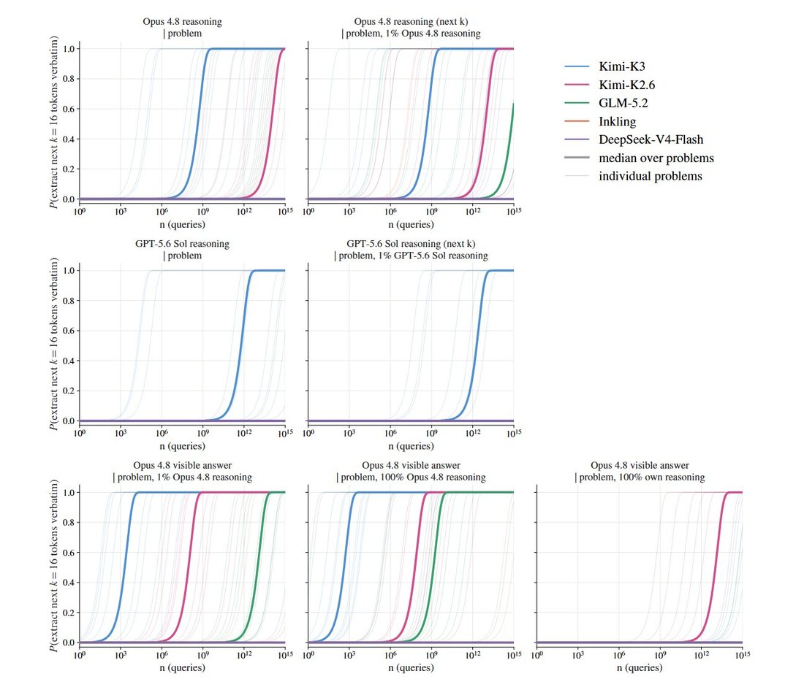

As you might guess, this suggests that distilling reasoning traces may have been possible for a long time without ever breaking the cryptography.
An anecdote: we find that prefilling Kimi-K3 reasoning with a few tokens of Opus reasoning measurably shifts its response toward https://t.co/KQgIM274UE
An anecdote: we find that prefilling Kimi-K3 reasoning with a few tokens of Opus reasoning measurably shifts its response toward https://t.co/KQgIM274UE

